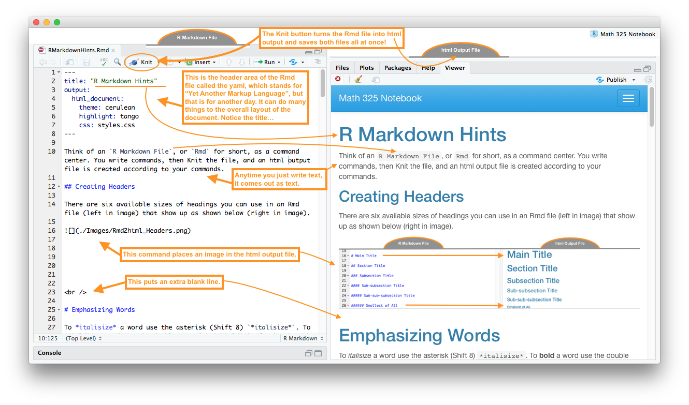
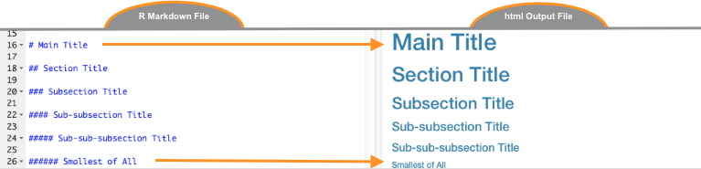
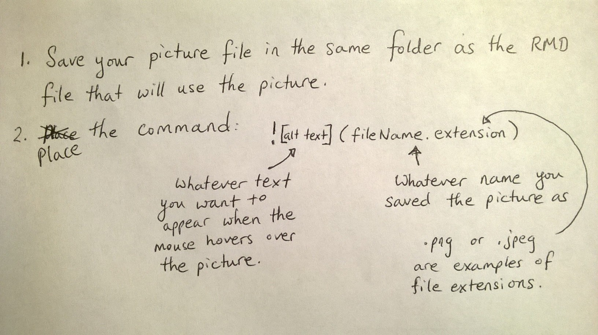

Think of an R Markdown File, or Rmd for
short, as a command center. You write commands, then Knit the file, and
an html output file is created according to your commands.
Carefully read through all parts of this image to learn…

The above tabs (blue bottons that read “Click Here to Learn More” and “Close”) were created with the code:
## {.tabset .tabset-pills .tabset-fade}
### Click Here to Learn More
Carefully read through all parts of this image to learn...

### Close
##To make a link use the code
[Name of Link](addressForLink).
Linking to parts of your textbook:
[Numerical Summaries](NumericalSummaries.html)
becomes Numerical
Summaries[Boxplots](GraphicalSummaries.html#boxplots)
becomes Boxplots[R Commands](RCommands.html) becomes R CommandsLinking to outside resources:
[R Colors](http://www.stat.columbia.edu/~tzheng/files/Rcolor.pdf)
becomes R
ColorsThere are six available sizes of headings you can use in an Rmd file (left in image) that show up as shown below (right in image).

To italisize a word use the asterisk (Shift 8)
*italisize*. To bold a word use the double
asterisk **bold**. The back tic
can be used tohighlightwords by placing back tics on each side of a word:
highlight `.
To achieve the result:
This is the first item.
This is the second.
This is the third.
Use the code:
To achieve the result:
* This is the first item.
* This is the second.
* This is the third.To achieve the result:
This is the first item.
This is the second.
This is the third.
Use the code:
To achieve the result:
1. This is the first item.
2. This is the second.
3. This is the third.To achieve the result:
This is the first item.
This is the second.
This is the third.
Use the code:
To achieve the result:
A) This is the first item.
B) This is the second.
C) This is the third.What is \(2+2\)?
4
8
What is \(3\times5\)?
14
15
1. What is $2+2$?
a. **4**
b. 8
2. What is $3\times5$?
a. 14
b. **15**Use the dollar signs $x=5$ to write \(x=5\) or
$z=\frac{x-\mu}{\sigma}$ to write \(z=\frac{x-\mu}{\sigma}\). For a nicely
centered equation use the double dollar signs $$ $$ on
separate lines
$$
z = \frac{\bar{x}-\mu}{\frac{\sigma}{\sqrt{n}}}
$$to get \[ z = \frac{\bar{x}-\mu}{\frac{\sigma}{\sqrt{n}}} \]
Or
$$
H_0: \mu_\text{Group 1} = \mu_\text{Group 2}
$$
$$
H_a: \mu_\text{Group 1} \neq \mu_\text{Group 2}
$$to get \[ H_0: \mu_{\text{Group 1}} = \mu_{\text{Group 2}} \] \[ H_a: \mu_{\text{Group 1}} \neq \mu_{\text{Group 2}} \]
Symbol list:
| Symbol | LaTeX Math Code |
|---|---|
| \(\alpha\) | $\alpha$ |
| \(\beta\) | $\beta$ |
| \(\sigma\) | $\sigma$ |
| \(\epsilon\) | $\epsilon$ |
| \(\bar{x}\) | $\bar{x}$ |
| \(\hat{Y}\) | $\hat{Y}$ |
| \(=\) | $=$ |
| \(\ne\) | $\ne$ or $\neq$ |
| \(>\) | $>$ |
| \(<\) | $<$ |
| \(\ge\) | $\ge$ |
| \(\le\) | $\le$ |
| \(\{ \}\) | $\{ \}$ |
| \(\text{Type just text}\) | $\text{Type just text}$ |
| \(\overbrace{Y_i}^\text{label}\) | $\overbrace{Y_i}^\text{label}$ |
| \(\underbrace{Y_i}_\text{label}\) | $\underbrace{Y_i}_\text{label}$ |
Here is a list of all supported LaTeX commands.
To add a picture to your document, say some notes you took down on paper from class,
Use the code:  to
get…

There are many ways to make tables in R Markdown. Here is a simple way to make a “pipe” table.
| Name | Age | Gender |
|---------------|---------------|--------------|
| Jill | 8 | Female |
| Jack | 9 | Male || Name | Age | Gender |
|---|---|---|
| Jill | 8 | Female |
| Jack | 9 | Male |
Notice in the YAML (at the top of the RMD file) there is a line that reads:
“theme: cerulean”
Other possible themes are
You can also change the highlighting by adding the line
“highlight: tango” to the YAML as follows.
---
title: "Markdown Hints"
output:
html_document:
theme: cerulean
highlight: tango
---Other highlighting options are
Go to the rmarkdown.rstudio.com website for more information on how to use R Markdown.